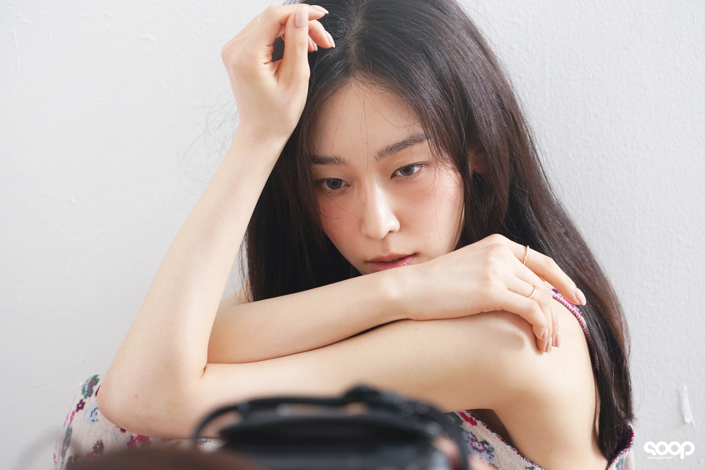

서현진
서현진(徐玄振, 1985년 2월 27일~)은 대한민국의 배우이다.

2001년 SM 엔터테인먼트 소속의 걸그룹인 밀크의 멤버로 데뷔했다. 2003년 밀크 활동 후에는 배우로 전향하였다. 2006년 드라마 《황진이》로 연기를 시작해, 구혜선의 영화 감독 데뷔작인 2008년 영화 《유쾌한 도우미》에 수녀 역으로 열연 ‘충무로 기대주’로 눈도장을 찍었다. 이후 《짝패》, 《신들의 만찬》, 《오자룡이 간다》, 《불의 여신 정이》 등에 주조연으로 출연하며 연기자로 자리매김했고, 2016년에 방영된 드라마 《또! 오해영》 과 《낭만닥터 김사부》로 흥행퀸의 자리에 오르며 큰 인기를 얻었다.